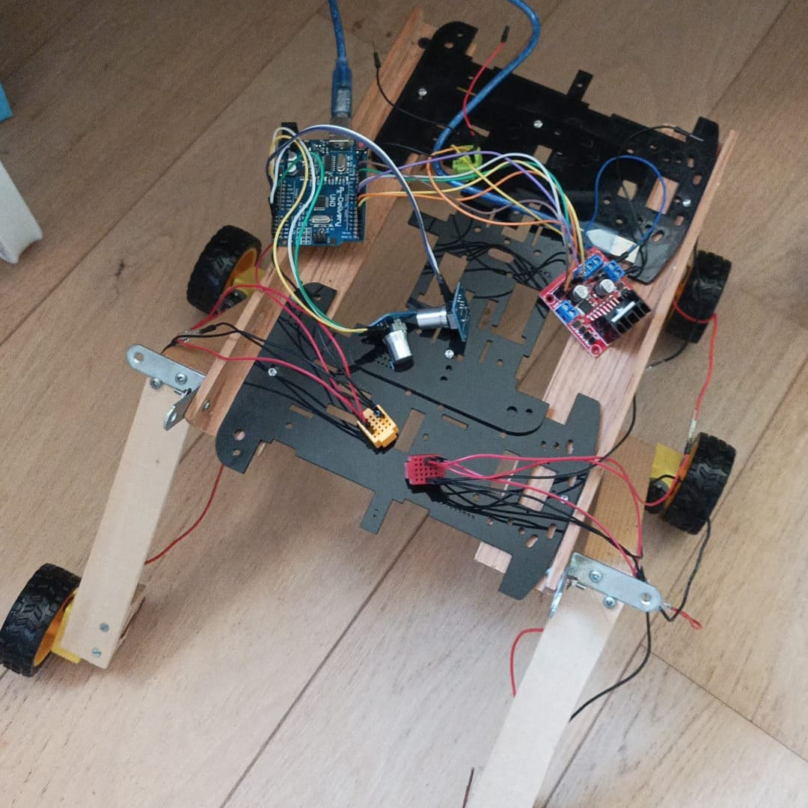

"Ce qui m'intéresse, ce n'est pas d'utiliser la technologie, c'est de la construire."
J'ai toujours été passionné par l'électronique. Les quelques TP de physique en seconde avec une carte Arduino m'ont envoûté, ça m'a poussé à continuer chez moi et au club informatique, jusqu'à créer de vrais projets en groupe comme le rover.
Je suis actuellement en terminale au lycée Jeanne d'Albret à Saint-Germain-en-Laye. J'ai suivi les spécialités mathématiques et NSI, ainsi que l'option maths expertes.
Je mène aussi des projets personnels dans plusieurs domaines pour explorer les facettes concrètes de l'informatique. En parallèle, je joue de la batterie depuis environ 10 ans.
Mon objectif est de devenir ingénieur en informatique, spécialisé dans les systèmes embarqués. La quantique m'attire également, un domaine que j'envisage d'approfondir à plus long terme.

Cette "voiture télécommandée" représente un rover martien. Vous pouvez voir à droite une première version de celui-ci. Le montage se compose de 6 moteurs DC, d'un module L298N, de 2 potentiomètres contrôlant la puissance des moteurs ainsi que d'une carte arduino UNO, regroupant le tout. Pour le moment, le rover se contrôle avec des câbles, mais nous ferons bientôt une version où les communications se feront par bluetooth. Je me suis particulièrement occupé de la programmation de ce rover (avec l'aide du club), vous pourrez retrouver certains programme ici.
Une simple page web, créée à partir d'un style préexistant que j'ai personnalisé. Elle a pour but d'agrémenter mon dossier parcoursup. Vous pourrez trouver le code source de ce petit projet ici.
A partir d'un modèle LLM (qwen2.5:7b), j'essaye de créer une IA vocale pouvant gérer un emploi du temps. Pour cela, je suis entrain de développer une base de donnée SQLite contenant le planning de quelqu'un. Le modèle LLM pourra alors communiquer avec cette base de donnée pour ajouter des évenements, en retirer ou consulter des évenements sur une période donnée (aujourd'hui, cette semaine, la semaine prochaine, ...).
Langages : Python, JavaScript, HTML, CSS, Arduino / C++
Domaines : Systèmes embarqués, IA/LLM locaux (Ollama), développement web, algorithmes
Durant cette année de terminale, je suis premier en NSI. J'étais également 3e au T1, puis 7e au T2 en maths expertes.
J'ai participé au concours de cybersécurité Passe ton Hack d'Abord, à la fois en cours de NSI et via le club informatique. Cette année, mon équipe s'est classée 340e sur 1089 équipes.
Lors de la journée d'immersion à EPITA, j'ai participé à deux ateliers : programmer une chorégraphie de robot araignée en C++/Arduino, puis un atelier d'introduction à la cybersécurité où nous devions retrouver le mot de passe administrateur d'un site web (chapeau noir vs chapeau blanc).
J'ai également eu l'occasion de visiter plusieurs journées portes ouvertes : Janson de Sailly (MP2I), EPITA, IPSA, INSA Rouen, ainsi que différents salons de l'Étudiant.